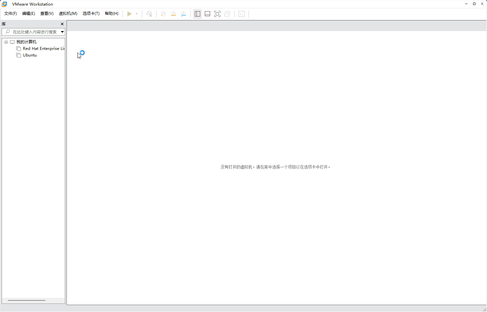
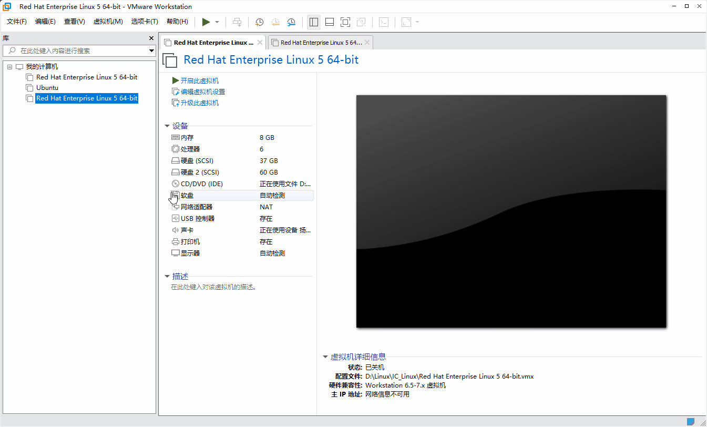
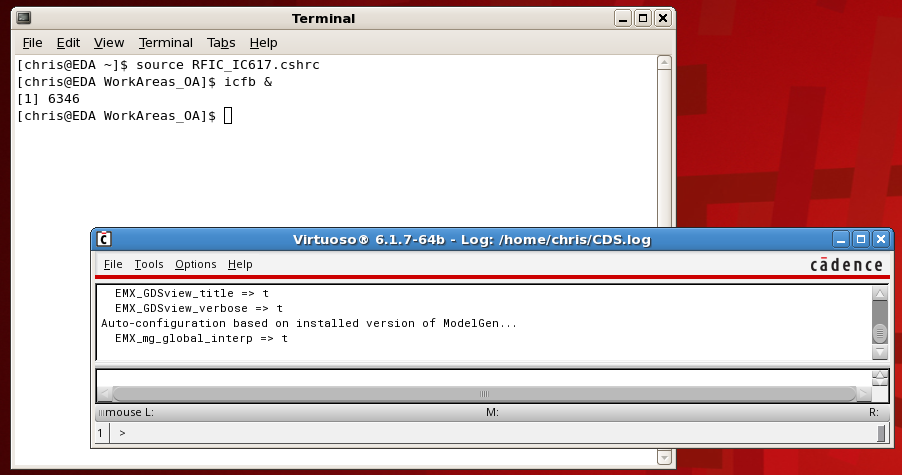
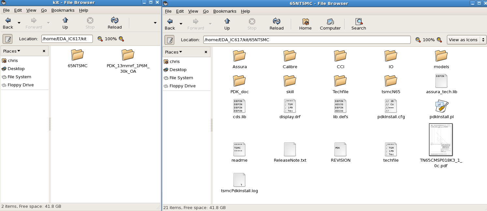

集创赛记录（1）：准备工作
1. 虚拟机及软件安装
进行芯片设计仿真的常用软件为 Cadence Virtuoso，该软件只能在 Linux 的特定版本下运行，并且安装步骤非常麻烦。
为了省去这些麻烦，我直接在网上找别人配置好的系统。
他这使用的虚拟机是 vmware-9 版本，我使用的是 vmware-17.5 ，但使用步骤都一样。
安装 vmwar 的教程网上很多。
安装Linux很简单，将下载好的
AnalogIC_Linux实践平台_V2.0.rar 文件解压，使用 vmware
打开其中的 Red Hat Enterprise Linux 5 64-bit.vmx
文件即可

设置共享文件夹，方便虚拟机和主机之间传输文件。
任意新建一个文件夹，点击 vmware
编辑虚拟器设置，点击选项，添加共享文件夹。

共享文件夹在Linux中的目录为：/mnt/hgfs/
启动该虚拟机IC设计软件平台。启动完成以后在虚拟机的左下角有账号登录框（分辨率问题可能没显示，往下拉即可看到）：输入账户名：chris ，密码：chris ，登录Linux系统，此外该Linux系统的root账号密码为：chris
该 Linux 系统中有两个版本的 Virtuoso，我们使用更新的 617 版本。
右键打开终端，输入以下命令，打开 Virtuoso
1 | source RFIC_IC617.cshrc |

2. 工艺库安装
将工艺库文件（我使用的
65NTSMC.tar.gz）放在共享文件夹内，在 Linux
中使用命令（根据实际情况修改文件路径）
1 | tar -xzvf /mnt/hgfs/IC_Linux_shared/65NTSMC.tar.gz -C /home/EDA_IC617/kit/65NTSMC/ |
解压到 /home/EDA_IC617/kit/65NTSMC下

使用 source RFIC_IC617.cshrc 和 icfb &
启动 Virtuoso，然后操作如下


评论